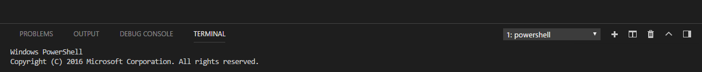
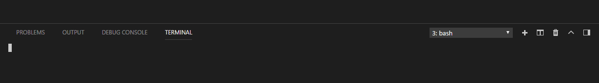
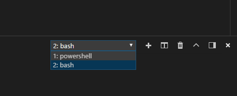
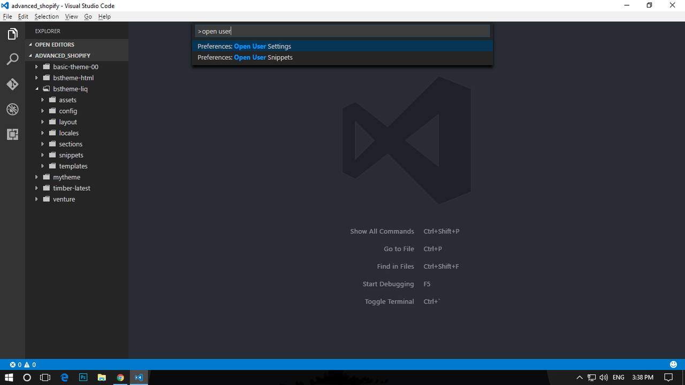
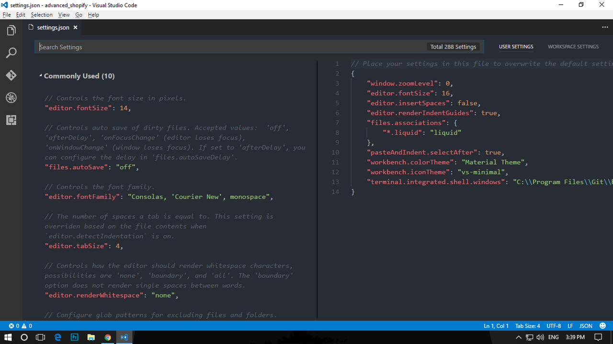
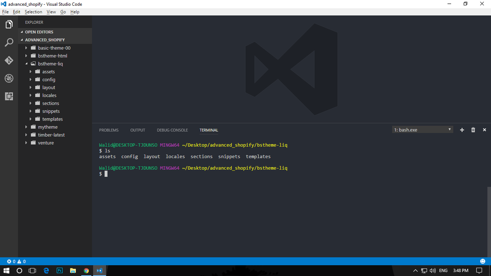

How do I use Bash on Windows from the Visual Studio Code integrated terminal?
Visual Studio Code on Windows uses PowerShell by default as the integrated terminal. If you want to use Bash from Visual Studio Code, what steps should be followed?
Answer
-
Install Git from https://git-scm.com/download/win
-
Open Visual Studio Code and press and hold
Ctrl+ ``` to open the terminal.

-
Open the command palette using
Ctrl+Shift+P. -
Type - Select Default Profile
-
Select Git Bash from the options
-
Click on the + icon in the terminal window
-
The new terminal now will be a Git Bash terminal. Give it a few seconds to load Git Bash

- You can now toggle between the different terminals as well from the dropdown in terminal.

Suggest
You no longer need to type in bash.exe path manually. This answer is deprecated. Now you can switch to bash directly, if you have git installed in the default path. If you installed git to a different path you need to use the below solution.
Install Git from https://git-scm.com/download/win.
Then open Visual Studio Code and open the command palette using Ctrl +
Shift + P. Then type "open user setting", and then select "Open User
Settings" from the drop down menu.

Then this tab will open up with default settings on left and your settings on the right:

Now copy this line of code to your own settings page (the pane on the right
hand side) and save - "terminal.integrated.shell.windows": "C:\\Program
Files\\Git\\bin\\bash.exe"
Note: "C:\\Program Files\Git\bin\bash.exe" is the path where the
bash.exe file is located from the Git installation. If you are using the
Windows Subsystem for Linux (WSL) Bash shell, the path would be
"C:\Windows\System32\bash.exe"
Now press Ctrl + ``` to open up the terminal from Visual Studio Code. And
you will have Bash -
